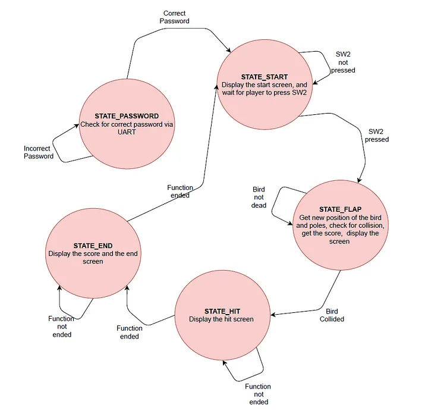
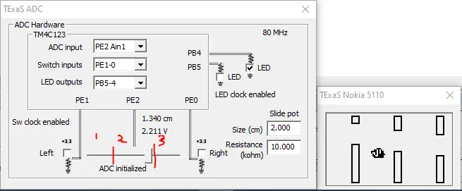
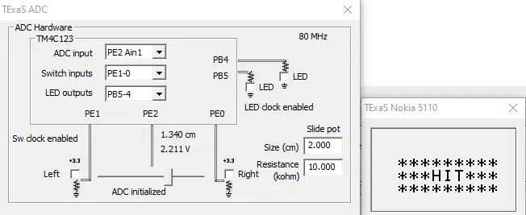
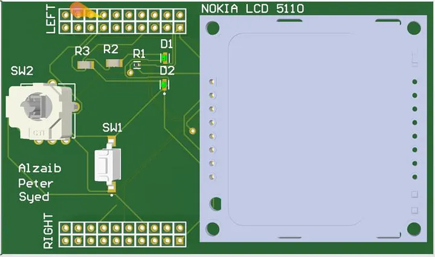

Flappy Bird on a Tiva C Microcontroller
Summary
A Flappy Bird game written in C for the Tiva C microcontroller, using a Nokia 5110 LCD, a button, a UART password prompt, an ADC potentiometer that sets the difficulty, and LEDs for game status. Release 1.0 ran on a Tiva C simulator; Release 2.0 fixed bugs and added a custom PCB shield designed for real hardware.
Motivation
The purpose was to practise integrating microcontroller features: buttons, a display, the analog-to-digital converter, registers and more. A mini game uses all of them, including a pole-generation algorithm, user input, output and score storage.
Game design
The game is a state machine with five states:
- PASSWORD: asks for a password over UART and only continues if it is correct.
- START: the screen alternates between the logo and a prompt to press a switch.
- FLAP: reads input, updates the bird with input and gravity, generates and moves poles, checks collisions, scores points and refreshes the screen.
- HIT: shows a hit message.
- END: shows the score against the top score, then returns to START.

Release 1.0: software
Images are bitmaps drawn on the Nokia 5110 LCD. Each button press moves the bird up 2 pixels and otherwise gravity pulls it down. Six pole sizes are generated at a fixed interval, move right to left, and the program checks for collisions with the poles, the sky and the ground.


Release 2.0: software and PCB
- LEDs: two LEDs on port B show when a game is being played and when the player scores.
- Gravity slider: a potentiometer on the ADC sets gravity, and so the difficulty, in three levels.
- PCB shield: sockets for the Tiva C, two LEDs and resistors, a control switch, and the power, ground and logic connections for the Nokia screen. It was designed in Altium, with pins matching the simulator setup.

Future work
- Read input with an external interrupt instead of polling in the main loop, so no presses are missed.
- Replace delay loops with timer interrupts.
- Add sound using the DAC.